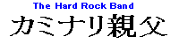
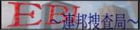
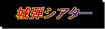

４号館
リンクのコーナーです。
企業・作家など
声優にしておさかな。永遠の１７歳。井上喜久子さんの公式ホームページ『あっとまんぼう』です。
『庄司卓完全攻略本』
『Ｐａｎｉｃ Ｐａｎｉｃ』に多大な影響を与えた作品『それ行け 宇宙戦艦ヤマモト・ヨーコ』の著者。
庄司卓先生のサイトです。
おともだち
あっとまんぼう系

＠ｍａｎｂｏｗで知り合ったｍｉｎｏｌｄさんがベースを担当するハードロックバンド『カミナリ親父』のページです。
＠ｍａｎｂｏｗで知り合ったねこるりさんのホームページ。談話室がアットホームな感じで本人の人柄が出ています。
『喫茶るりー』『居酒屋るりー』そしてパソコンクリニックなどが有ります。
チャットは連日おお賑わい。
＠ｍａｎｂｏｗで知り合った退屈堂さんのホームページ。その名もずばり退屈堂。

＠ｍａｎｂｏｗで知り合ったえびっち君のホームページ。らんま好きは僕といい勝負かな。
二号館の大阪オフの関西側からの視点で見た『８１４戦記』はこちらから。
『Ｉｔ’ｓ Ｈｏｂｂｙ ｒｏｏｍ』
＠ｍａｎｂｏｗで知り合った日曜小説家さんこと石川さんのホームページです。
とにかく圧倒されるほど広範囲の事を扱いしかも詳しい。
＠ｍａｎｂｏｗで知り合ったみぃてっくさんこと三好伸長さんのページです。車好き必見。
『Ｋａｌｅｉｄｏｓｃｏｐｅ ｏｆ Ｈｏｂｂｉｅｓ』
＠ｍａｎｂｏｗで知り合ったコーさんのページです。これまた広範囲の事を取り扱ってます。
＠ｍａｎｂｏｗで知り合ったよっきさんのページです。トップページの『あっとまんぼうリング』はこの方による物。
hideyukiさんの起こしたオフ会用掲示板です。オフ会の感想。告知などに運用してくださいとのことです。
『喫茶るりー』での飲み仲間（下戸みたいですが 笑）些那瑠さんのページです。
『Ｐａｒａｄｉｓｅ☆Ｃａｆｅ ２号店』
センチメンタルグラフィティをこよなく愛する旅する学生。聖賢者さんのページです。
＠ｍａｎｂｏｗで知り合った、そしてメーリングリストでお世話になってる茜空（ＳＯＲＡ）さんのページです。
『たかしん家（ち）』
あっとまんぼうの有志で立ち上げている（事務局とは無関係です）オフ会幹事会の一人。井上たかしさんのページです。
たなごんさんのページです。『お姉ちゃん大辞典』はこちら。
＠ｍａｎｂｏｗで知り合ったごうにゃんさんのページです。写真が一杯のページです。
『ありさんのぺーじ』
喜久子さんファンでクウガ好き。僕とは気の合うありさんのサイトです。
ミリタリーとロボットものをこよなく愛すゼロさんのページです。
その他

特撮ファン必見。アギトやコスモスの掲示板もあります。
様々なコンテンツの中でも僕がお気に入りなのは『Ｉｄｏｌ Ｔａｌｋ』ギャグセンスは高い。僕も掲示板に出没してます。
